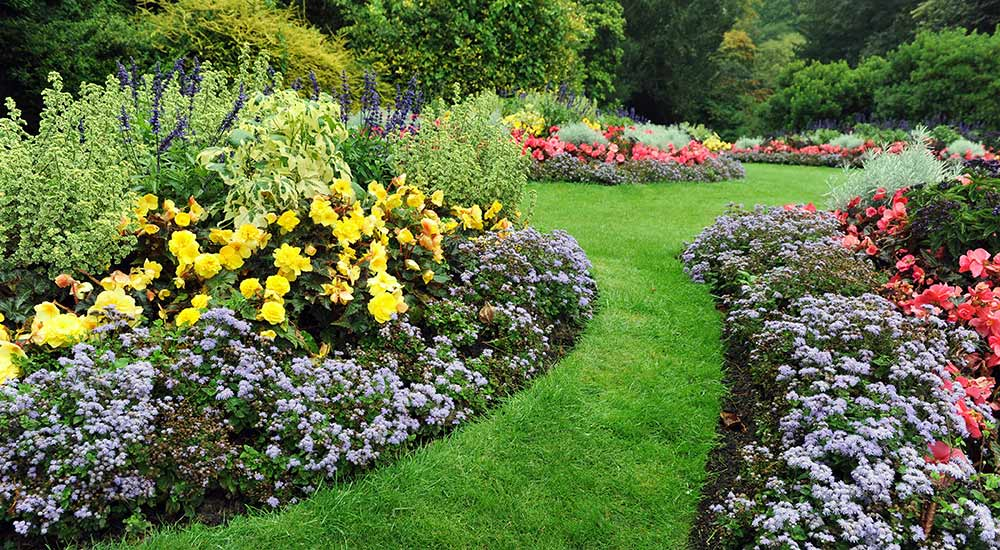

Landscape Maintenance Services

- Spring clean up of all beds
- Edging mulch beds and tree rings
- Mulching
- Apply pre-emergent weed control to all beds
- 5 Step Fertilizer program for turf
- Seasonal trimming of all small trees and shrubs
- As needed weed control in beds and non-turf areas
- Fall clean up of all beds and turf
- Aeration and/or over seeding turf
- Irrigation Start Up and Shut Down